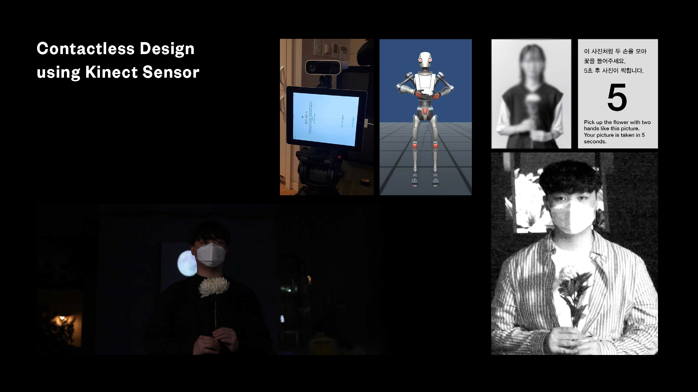
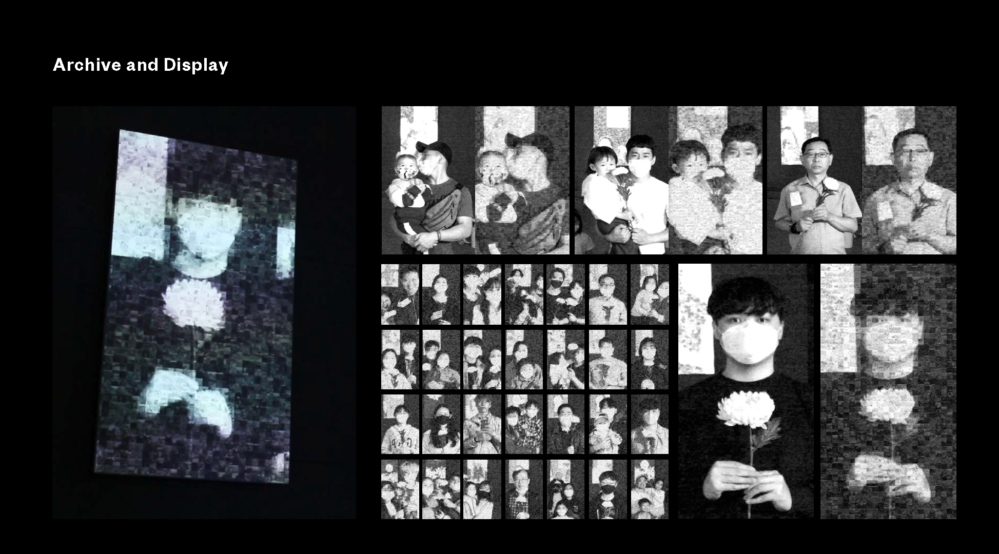

Unity 구현
Azure Kinect 입력
관객의 몸과 깊이 입력을 Unity가 받는다. 센서 데이터를 참여 이벤트로 연결해 미리 녹화된 영상만 재생하는 화면에서 벗어나게 했다.

Unity Timeline
미리 구성한 미디어의 시간과 관객이 예상치 못한 순간에 행동하는 시간을 연결했다. 센서 이벤트가 추모 시퀀스와 화면 전환에 영향을 준다.
실시간 이미지 합성
현재 관객의 이미지와 기록 사진을 화면에서 합성했다. 감지, 이미지 구성, Timeline 재생은 각각 확인할 수 있는 별개의 단계다.

시스템 흐름
- 01Azure Kinect
- 02참여 이벤트
- 03Unity Timeline·합성
- 04투사 화면
작품의 질문
현재 몸의 움직임과 과거의 사진을 같은 화면에서 만나게 하는 추모 작업이다.